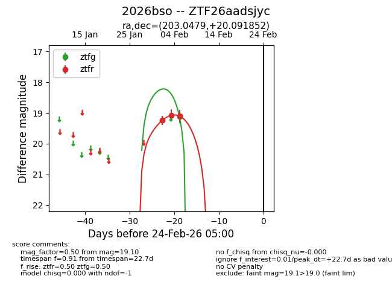
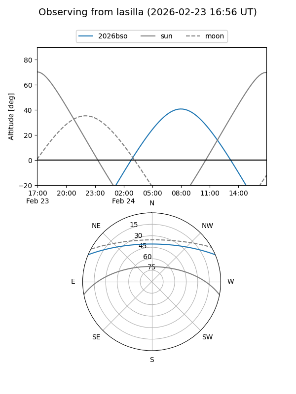
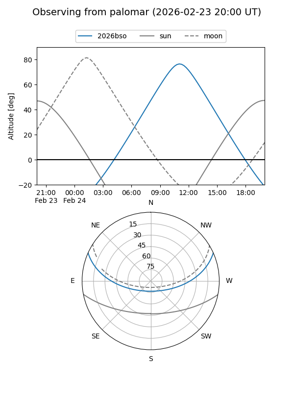

2026bso
Target 2026bso at 2026-02-24 09:08
Aliases and brokers:
FINK: link
Lasair: link
ALeRCE: link
TNS: link
YSE: link
alt names
ZTF26aadsjyc (ztf,fink_ztf)
2026bso (tns,yse)
Coordinates:
equatorial (ra, dec) = 203.0479,+20.09185
equatorial (HMS+DMS) = 13:32:11.49,+20:05:30.67
galactic (l, b) = (358.0644,+78.31866)
Flags:
Photometry:
last ztfg=19.12, ztfr=19.10
1 ztfg, 3 ztfr detections
Lightcurve

Visibility


Additional plots